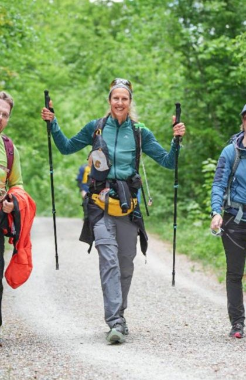
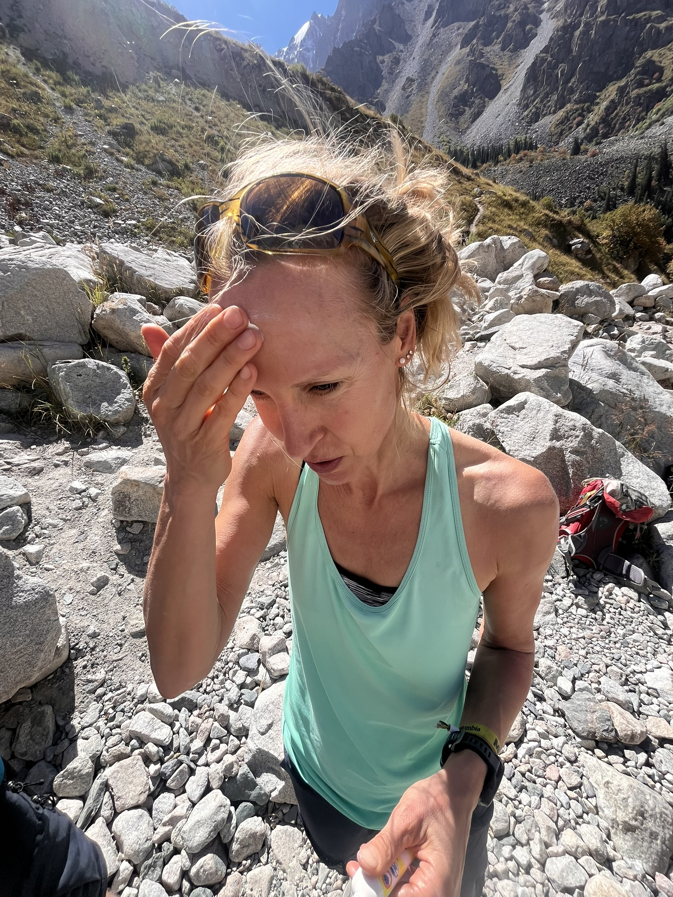
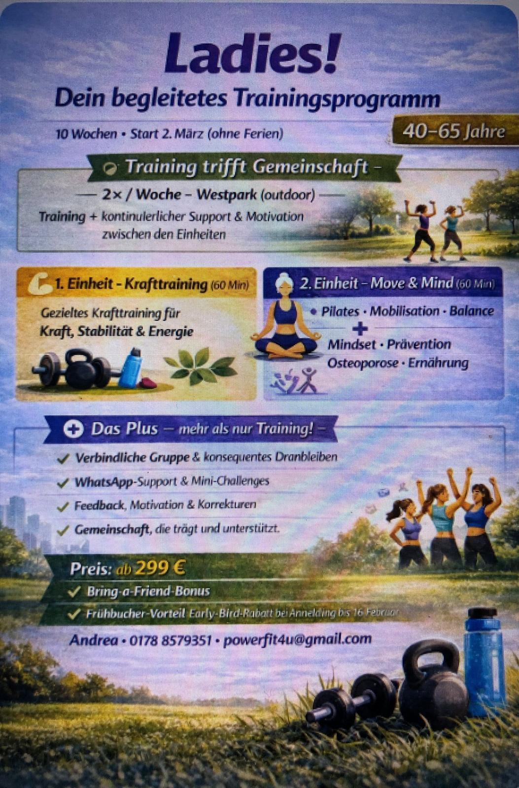
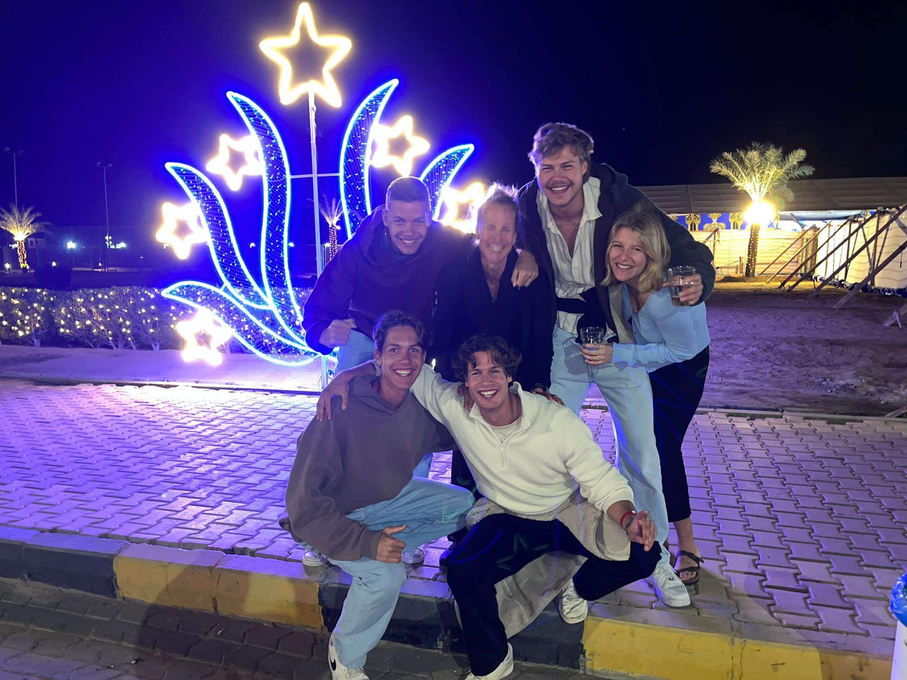
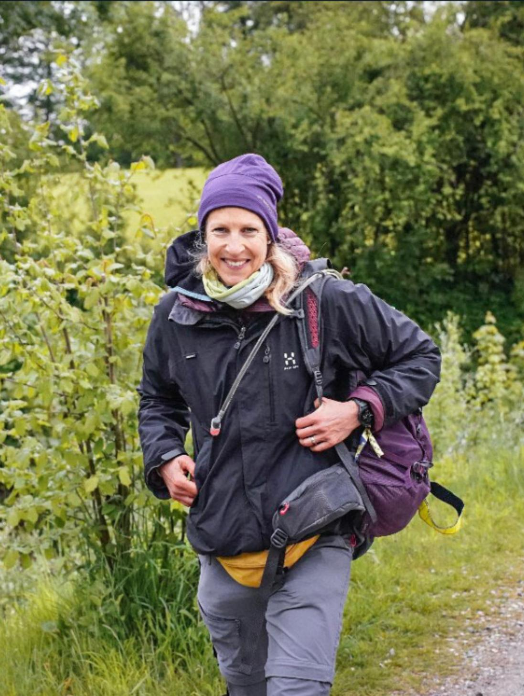

Als Fitnesstrainerin und Reha-Übungsleiterin begleite ich seit vielen Jahren Menschen in unterschiedlichsten Trainingsformaten – von sanften, gesundheitsorientierten Kursen bis hin zu kraftvollen Ausdauer- und Powerformaten.
Im Mittelpunkt meiner Arbeit stehen funktionelle Kräftigung, eine stabile Körpermitte, gute Haltung und ein klar strukturierter Trainingsaufbau. Bewegung darf fordern, soll aber realistisch bleiben und langfristig Wirkung zeigen.
Ich begleite seit vielen Jahren Menschen in unterschiedlichsten Kursformaten – von ruhigeren Angeboten wie Wirbelsäule, Rücken oder Pilates bis hin zu kraftvollen Powerkursen wie Cycling, Fatburn oder BodyStyling – sowie in Reha-Kursen. Mein Fokus liegt auf funktioneller Kräftigung, stabiler Körpermitte und sauberer Übungsausführung.
Ich liebe es, Menschen aus ihrer Komfortzone zu locken, Freude an Bewegung zu vermitteln und sie dabei zu unterstützen, persönliche Erfolge zu erleben. Dranbleiben, Grenzen überwinden und Schritt für Schritt stärker werden – das ist mir wichtig.
Auch mein eigener Weg ist geprägt von Abenteuerlust und Durchhaltevermögen. Mehrmonatige Reisen, intensive körperliche Herausforderungen wie ein Dschungeltrek in Sumatra, eine Vulkanbesteigung in Guatemala und der 100-km-Megamarsch haben meine eigene Belastbarkeit geprägt. Diese Erfahrungen fließen in meine Trainingsarbeit ein: Stabilität aufbauen, Grenzen erweitern, Vertrauen in den eigenen Körper entwickeln.
Als Mutter von vier Söhnen weiß ich, wie wertvoll Organisation, Belastbarkeit und Durchhaltevermögen sind. Diese Fähigkeiten bringe ich in meine Arbeit ein – kombiniert mit Struktur, Motivation und einem positiven Mindset. Mein Ziel ist, dass Training nicht nur wirkt, sondern auch Spaß macht und nachhaltige Stärke aufbaut.


Am 2. März startet mein Outdoor-Trainingsprogramm 🏋️♀️ nur (!) für Frauen (40–65 Jahre) – perfekt für alle, die „eigentlich“ Sport machen wollen - sich aber oft schwer aufraffen können. 💪
Wir trainieren zweimal pro Woche draußen – Kraft (1. Einheit) , Pilates, Balance & kleine Tipps zu Mindset, Ernährung & Knochengesundheit und Routine (2. Einheit)– und du bekommst auch zwischen den Einheiten Unterstützung und Motivation, damit du dranbleibst und dich nicht alleine fühlst.
Wann & wo: Mo & Do 19:15 Uhr/ 60 min., Westpark ( Nähe Rosengarten), 10 Wochen / 20 Einheiten +2 Ersatz (Ohne Ferien) Wenn Du Lust hast auf Gemeinschaft ( kleine geschlossene Gruppe!), Austausch und echte Motivation, bist du hier genau richtig. Ich freue mich, dich durch dieses Programm zu begleiten und endlich den finalen Schubs 💨 hin zum Sport zu geben.
Schreib mir eine Nachricht!
Bewegung bedeutet für mich mehr als Training. Sie bedeutet Vertrauen in den eigenen Körper, innere Stärke und die Erfahrung, dass man oft mehr kann, als man denkt.
Ich begleite seit vielen Jahren Menschen in unterschiedlichsten Kursformaten – von ruhigeren Angeboten wie Wirbelsäule, Rücken oder Pilates bis hin zu kraftvollen Powerkursen wie Cycling, Fatburn oder BodyStyling – sowie in Reha-Kursen. Mein Fokus liegt auf funktioneller Kräftigung, stabiler Körpermitte und sauberer Übungsausführung.
Ich liebe es, Menschen aus ihrer Komfortzone zu locken, Freude an Bewegung zu vermitteln und sie dabei zu unterstützen, persönliche Erfolge zu erleben. Dranbleiben, Grenzen überwinden und Schritt für Schritt stärker werden – das ist mir wichtig.
Auch mein eigener Weg ist geprägt von Abenteuerlust und Durchhaltevermögen. Mehrmonatige Reisen, intensive körperliche Herausforderungen wie ein Dschungeltrek in Sumatra, eine Vulkanbesteigung in Guatemala und der 100-km-Megamarsch haben meine eigene Belastbarkeit geprägt. Diese Erfahrungen fließen in meine Trainingsarbeit ein: Stabilität aufbauen, Grenzen erweitern, Vertrauen in den eigenen Körper entwickeln.
Als Mutter von vier Söhnen weiß ich, wie wertvoll Organisation, Belastbarkeit und Durchhaltevermögen sind. Diese Fähigkeiten bringe ich in meine Arbeit ein – kombiniert mit Struktur, Motivation und einem positiven Mindset. Mein Ziel ist, dass Training nicht nur wirkt, sondern auch Spaß macht und nachhaltige Stärke aufbaut.
Gezielte Übungen für einen starken Rücken
Alltagsnahes Krafttraining für Rücken, Rumpf und Stabilität
Körperbewusstsein und Kontrolle
Effektives Training für den gesamten Körper
Ausdauer und Energie für mehr Vitalität
Körpermitte stärken für bessere Haltung

Ich arbeite mit Fitnessstudios, Vereinen und Trägern im Gesundheitsbereich zusammen. Kooperationen und Kursleitungen sind nach Absprache möglich.